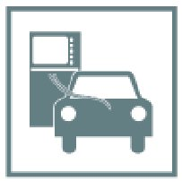

Keyless Entry: Testing and Inspection
51 21 150 - Blocking, if necessary initializing, car key in immobilizer control module

Note:
Execution in diagnosis system:
->Service functions->
->Body->
->Locking and security functions->
->Remote control key